JEE Main 2024 (Session 1), 1 Feb Shift 2: worked solutions for review
Questions and options are NTA’s own images; the green option is NTA’s final key. Every solution below was written by Claude
and checked against NTA’s final key. It is not NTA’s solution. Please mark anything unclear or wrong.
Q1 · Mathematics · MCQ · ID 9561771216
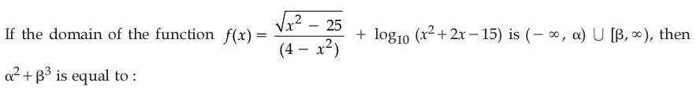
(1) 
(3) 
Hint 1: Write each condition: the square root, the denominator and the logarithm. Then intersect.
Hint 2: x² ≥ 25, x² ≠ 4, and x² + 2x − 15 = (x + 5)(x − 3) > 0.
What this tests: Domain of a function.
1. x² ≥ 25 gives x ≤ −5 or x ≥ 5. The log needs x < −5 or x > 3.
2. Together: (−∞, −5) ∪ [5, ∞), so α = −5, β = 5.
3. α² + β³ = 25 + 125 = 150.
Answer: (3)
If this felt hard: Revise 'Relations and Functions'.
Claude’s answer: 3 · NTA final key: 3 · agrees · Answer recomputed with SymPy (tools/verify_pyq_solutions.py)
Q2 · Mathematics · MCQ · ID 9561771217
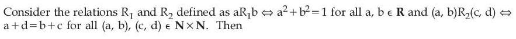
Hint 1: Test R1 with a = b = 1. For R2, rewrite a + d = b + c as a − b = c − d.
Hint 2: R1: is (1, 1) related? R2: 'same difference a − b' is like equality of a number.
What this tests: Equivalence relations.
1. 1² + 1² ≠ 1, so R1 is not reflexive: not an equivalence relation.
2. (a, b)R2(c, d) means a − b = c − d: reflexive, symmetric and transitive.
Answer: (2)
If this felt hard: Revise 'Relations and Functions'.
Claude’s answer: 2 · NTA final key: 2 · agrees · Answer recomputed with SymPy (tools/verify_pyq_solutions.py)
Q3 · Mathematics · ID 9561771218
Left out of the bank: dropped (NTA).
Q4 · Mathematics · MCQ · ID 9561771219
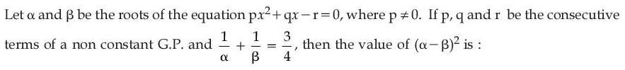
(1) 
(4) 
Hint 1: Write q = pk and r = pk². Express 1/α + 1/β with the coefficients.
Hint 2: For px² + qx − r = 0: α + β = −q/p, αβ = −r/p. So 1/α + 1/β = q/r = 1/k.
What this tests: Roots and coefficients; geometric progression.
1. 1/k = 3/4, so k = 4/3.
2. (α − β)² = (α + β)² − 4αβ = (q² + 4pr)/p² = k² + 4k² = 5k² = 80/9.
Answer: (2)
If this felt hard: Revise 'Quadratic Equations'.
Claude’s answer: 2 · NTA final key: 2 · agrees · Answer recomputed with SymPy (tools/verify_pyq_solutions.py)
Q5 · Mathematics · MCQ · ID 9561771220
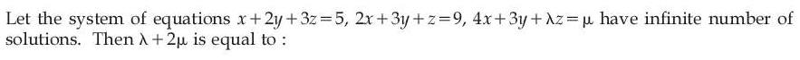
(2) 
(3) 
(4) 
Hint 1: Infinitely many solutions: the third equation is a combination a(eq 1) + b(eq 2).
Hint 2: x: a + 2b = 4. y: 2a + 3b = 3.
What this tests: Systems with infinitely many solutions.
1. a = −6, b = 5.
2. z: 3a + b = λ = −13. Constants: 5a + 9b = μ = 15.
3. λ + 2μ = −13 + 30 = 17.
Answer: (1)
If this felt hard: Revise 'Determinants'.
Claude’s answer: 1 · NTA final key: 1 · agrees · Answer recomputed with SymPy (tools/verify_pyq_solutions.py)
Q6 · Mathematics · MCQ · ID 9561771221
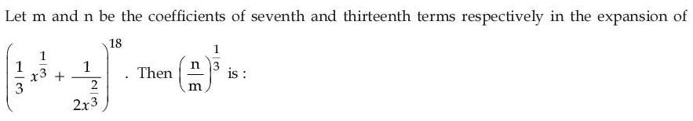
Hint 1: Write the general term Tr+1 = C(18, r)(x1/3/3)18−r(1/(2x2/3))r.
Hint 2: Coefficient of Tr+1 = C(18, r)(1/3)18−r(1/2)r. Seventh term: r = 6. Thirteenth: r = 12.
What this tests: General term of a binomial expansion.
1. n/m = [C(18, 12)/C(18, 6)] × 36/26 = 3⁶/2⁶ (since C(18, 12) = C(18, 6)).
2. (n/m)1/3 = 9/4.
Answer: (4)
If this felt hard: Revise 'Binomial Theorem'.
Claude’s answer: 4 · NTA final key: 4 · agrees · Answer recomputed with SymPy (tools/verify_pyq_solutions.py)
Q7 · Mathematics · MCQ · ID 9561771222
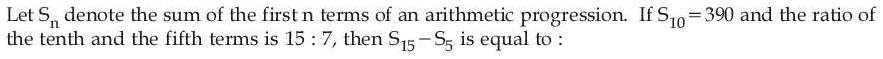
Hint 1: Write S10 and the term ratio with a and d.
Hint 2: 5(2a + 9d) = 390 and 7(a + 9d) = 15(a + 4d).
What this tests: Arithmetic progressions.
1. From the ratio: 8a = 3d. With 2a + 9d = 78: a = 3, d = 8.
2. S15 = 7.5(6 + 112) = 885, S5 = 2.5(6 + 32) = 95.
3. S15 − S5 = 790.
Answer: (4)
If this felt hard: Revise 'Sequences and Series'.
Claude’s answer: 4 · NTA final key: 4 · agrees · Answer recomputed with SymPy (tools/verify_pyq_solutions.py)
Q8 · Mathematics · MCQ · ID 9561771223
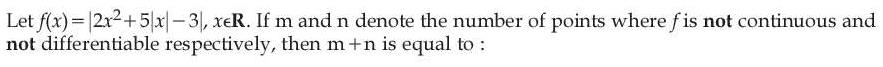
(1) 
(2) 
(3) 
(4) 
Hint 1: Factor 2t² + 5t − 3 with t = |x|. Where does the inside change sign? Is there a kink from |x| too?
Hint 2: 2t² + 5t − 3 = (2t − 1)(t + 3), zero at |x| = 1/2. Near x = 0 the inside is negative, so f = 3 − 5|x| − 2x².
What this tests: Differentiability with modulus functions.
1. f is continuous everywhere: m = 0.
2. Corners at x = ±1/2 (the modulus flips sign) and at x = 0 (the |x| term): n = 3.
3. m + n = 3.
Answer: (3)
If this felt hard: Revise 'Continuity and Differentiability'.
Claude’s answer: 3 · NTA final key: 3 · agrees · Answer recomputed with SymPy (tools/verify_pyq_solutions.py)
Q9 · Mathematics · MCQ · ID 9561771224
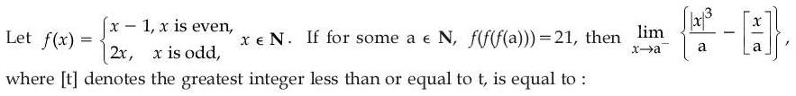
Hint 1: Work backwards from f(y) = 21. Which branch can give an odd output?
Hint 2: 2y is even, so 21 must come from y − 1 with y even: y = 22. Repeat for f(z) = 22 and f(a) = z.
What this tests: Piecewise functions on N; one-sided limits with [x].
1. f(z) = 22: z odd with 2z = 22, so z = 11. f(a) = 11: a even with a − 1 = 11, so a = 12.
2. As x → 12⁻: |x|³/12 → 144 and [x/12] = 0.
3. Limit = 144.
Answer: (2)
If this felt hard: Revise 'Relations and Functions' and 'Limits and Derivatives'.
Claude’s answer: 2 · NTA final key: 2 · agrees · Answer recomputed with SymPy (tools/verify_pyq_solutions.py)
Q10 · Mathematics · MCQ · ID 9561771225
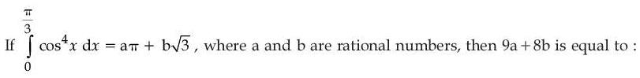
(1) 
(2) 
(3) 
(4) 
Hint 1: Write cos⁴x with double angles: cos⁴x = (3 + 4 cos 2x + cos 4x)/8.
Hint 2: Integrate term by term from 0 to π/3.
What this tests: Integrating powers of cosine.
1. ∫ = (1/8)[3x + 2 sin 2x + (1/4) sin 4x] from 0 to π/3 = (1/8)[π + √3 − √3/8] = π/8 + 7√3/64.
2. a = 1/8, b = 7/64: 9a + 8b = 9/8 + 7/8 = 2.
Answer: (2)
If this felt hard: Revise 'Integrals'.
Claude’s answer: 2 · NTA final key: 2 · agrees · Answer recomputed with SymPy (tools/verify_pyq_solutions.py)
Q11 · Mathematics · MCQ · ID 9561771226
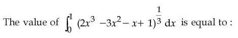
(1) 
(2) 
(3) 
(4) 
Hint 1: Put x → 1 − x. What happens to the cubic 2x³ − 3x² − x + 1?
Hint 2: With x → 1 − x the cubic becomes its own negative, and the cube root is odd.
What this tests: Definite integrals with the king property.
1. The integrand f satisfies f(1 − x) = −f(x).
2. So I = −I, and I = 0.
Answer: (2)
If this felt hard: Revise 'Integrals' (properties of definite integrals).
Claude’s answer: 2 · NTA final key: 2 · agrees · Answer recomputed with SymPy (tools/verify_pyq_solutions.py)
Q12 · Mathematics · ID 9561771227
Left out of the bank: dropped (NTA).
Q13 · Mathematics · MCQ · ID 9561771228
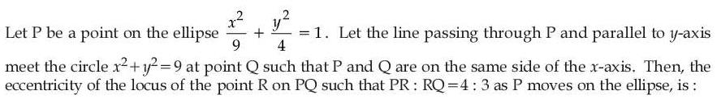
Hint 1: Take P = (3 cos t, 2 sin t). Then Q, directly above or below it on the circle, is (3 cos t, 3 sin t).
Hint 2: R divides PQ with PR : RQ = 4 : 3, so R = (3P + 4Q)/7.
What this tests: Locus by the section formula; eccentricity.
1. R = (3 cos t, (6 + 12) sin t/7) = (3 cos t, (18/7) sin t): an ellipse with a = 3, b = 18/7.
2. e² = 1 − (18/21)² = 1 − 36/49 = 13/49.
3. e = √13/7.
Answer: (1)
If this felt hard: Revise 'Conic Sections'.
Claude’s answer: 1 · NTA final key: 1 · agrees · Answer recomputed with SymPy (tools/verify_pyq_solutions.py)
Q14 · Mathematics · MCQ · ID 9561771229
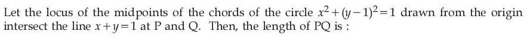
(1) 
(3) 
(4) 
Hint 1: The line from the centre to the midpoint of a chord is perpendicular to the chord. The chord passes through the origin.
Hint 2: Midpoint M(h, k): CM ⊥ OM with C = (0, 1). So h² + k(k − 1) = 0: the circle x² + y² − y = 0.
What this tests: Locus of midpoints of chords through a point.
1. With y = 1 − x: x² + (1 − x)² − (1 − x) = 2x² − x = 0, so x = 0 or 1/2.
2. P = (0, 1), Q = (1/2, 1/2): PQ = 1/√2.
Answer: (3)
If this felt hard: Revise 'Conic Sections' (circle).
Claude’s answer: 3 · NTA final key: 3 · agrees · Answer recomputed with SymPy (tools/verify_pyq_solutions.py)
Q15 · Mathematics · MCQ · ID 9561771230
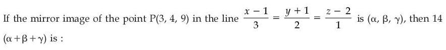
(2) 
Hint 1: Find the foot of the perpendicular F from P to the line. The image is 2F − P.
Hint 2: Line point (1, −1, 2) + t(3, 2, 1). t = ((2, 5, 7)·(3, 2, 1))/14 = 23/14.
What this tests: Image of a point in a line.
1. F = (1 + 69/14, −1 + 46/14, 2 + 23/14).
2. α + β + γ = 2(sum of F) − (sum of P) = 2(2 + 138/14) − (3 + 4 + 9) = 4 + 138/7 − 16 = 54/7.
3. 14 × 54/7 = 108.
Answer: (2)
If this felt hard: Revise 'Three Dimensional Geometry'.
Claude’s answer: 2 · NTA final key: 2 · agrees · Answer recomputed with SymPy (tools/verify_pyq_solutions.py)
Q16 · Mathematics · MCQ · ID 9561771231
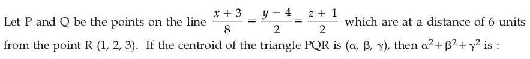
(1) 
Hint 1: P and Q are symmetric about the foot of the perpendicular from R. So P + Q = 2F.
Hint 2: Line: (−3, 4, −1) + s(8, 2, 2). The foot F has s = ((4, −2, 4)·(8, 2, 2))/72 = 36/72 = 1/2.
What this tests: Points on a line at a given distance; centroid.
1. F = (1, 5, 0), so P + Q = (2, 10, 0).
2. Centroid = (P + Q + R)/3 = (3, 12, 3)/3 = (1, 4, 1).
3. α² + β² + γ² = 18.
Answer: (1)
If this felt hard: Revise 'Three Dimensional Geometry'.
Claude’s answer: 1 · NTA final key: 1 · agrees · Answer recomputed with SymPy (tools/verify_pyq_solutions.py)
Q17 · Mathematics · MCQ · ID 9561771232
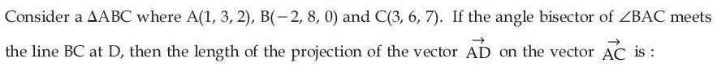
(4)
Hint 1: The angle bisector divides BC in the ratio AB : AC.
Hint 2: AB = √(9 + 25 + 4) = √38, AC = √(4 + 9 + 25) = √38. Equal, so D is the midpoint of BC.
What this tests: Angle bisector theorem; projection.
1. D = (1/2, 7, 7/2), AD = (−1/2, 4, 3/2).
2. Projection on AC = (2, 3, 5): (−1 + 12 + 7.5)/√38 = 18.5/√38 = 37/(2√38).
Answer: (2)
If this felt hard: Revise 'Vector Algebra'.
Claude’s answer: 2 · NTA final key: 2 · agrees · Answer recomputed with SymPy (tools/verify_pyq_solutions.py)
Q18 · Mathematics · MCQ · ID 9561771233
(1)
(2)
(3)
(4)
Hint 1: P(A appears) = 1 − 2/7. Split it into 'A and V appear' and 'A appears, V does not'.
Hint 2: P(A ∩ V') = P(A) − P(A ∩ V).
What this tests: Probability of combined events.
1. 5/7 − 1/5 = 25/35 − 7/35 = 18/35.
Answer: (3)
If this felt hard: Revise 'Probability'.
Claude’s answer: 3 · NTA final key: 3 · agrees · Answer recomputed with SymPy (tools/verify_pyq_solutions.py)
Q19 · Mathematics · MCQ · ID 9561771234
(1) 
(2) 
(3) 
(4)
Hint 1: Use the mean to get Σxi, then the variance to get Σxi².
Hint 2: Σx = 12 and Σx² = 10(84/25 + 36/25) = 48. Then Σ(x − α) = 12 − 10α and Σ(x − β)² = 48 − 24β + 10β².
What this tests: Mean and variance from shifted sums.
1. 12 − 10α = 2 gives α = 1.
2. 10β² − 24β + 48 = 40 gives 5β² − 12β + 4 = 0, so β = 2 (positive integer).
3. β/α = 2.
Answer: (2)
If this felt hard: Revise 'Statistics'.
Claude’s answer: 2 · NTA final key: 2 · agrees · Answer recomputed with SymPy (tools/verify_pyq_solutions.py)
Q20 · Mathematics · MCQ · ID 9561771235
(1) 
(2) 
(3) 
(4) 
Hint 1: Write everything in c = cos x.
Hint 2: 4(1 − c²) − 4c³ + 9 − 4c = 0 becomes 4c³ + 4c² + 4c − 13 = 0.
What this tests: Trigonometric equations reduced to polynomials.
1. At c = 1 the left side is −1 < 0, and it increases for c in [−1, 1] (derivative 12c² + 8c + 4 > 0), so it stays negative.
2. No root with |c| ≤ 1: 0 solutions.
Answer: (1)
If this felt hard: Revise 'Trigonometric Functions'. Always check the root lies in [−1, 1].
Claude’s answer: 1 · NTA final key: 1 · agrees · Answer recomputed with SymPy (tools/verify_pyq_solutions.py)
Q21 · Mathematics · Numerical · ID 9561771236
Hint 1: MᵀM = 1 means M is a unit vector. What does A = I − 2MMᵀ do to M, and to a vector perpendicular to M?
Hint 2: AM = M − 2M(MᵀM) = −M. If MᵀX = 0 then AX = X.
What this tests: Eigenvalues of a reflection matrix.
1. The eigenvalues are −1 and 1 (A is a reflection).
2. Sum of squares = 1 + 1 = 2.
Answer: 2
If this felt hard: Revise 'Matrices'.
Claude’s answer: 2 · NTA final key: 2 · agrees · Answer recomputed with SymPy (tools/verify_pyq_solutions.py)
Q22 · Mathematics · Numerical · ID 9561771237
Hint 1: Start with C(20, 2) pairs. Which pairs give no intersection, and which pairs all share one point?
Hint 2: 10 parallel lines: C(10, 2) = 45 pairs never meet. 10 concurrent lines: their 45 pairs give only 1 point.
What this tests: Counting intersection points of lines.
1. 190 − 45 − (45 − 1) = 101.
Answer: 101
If this felt hard: Revise 'Permutations and Combinations'.
Claude’s answer: 101 · NTA final key: 101 · agrees · Answer recomputed with SymPy (tools/verify_pyq_solutions.py)
Q23 · Mathematics · Numerical · ID 9561771238
Hint 1: Sides a, ar, ar² with r > 1. Which triangle inequality is the hard one?
Hint 2: a + ar > ar² gives r² − r − 1 < 0, so r < (1 + √5)/2 ≈ 1.618.
What this tests: Triangle inequality with a GP; greatest integer function.
1. 1 < r < 1.618, so [r] = 1 and [−r] = −2.
2. 3[r] + [−r] = 3 − 2 = 1.
Answer: 1
If this felt hard: Revise 'Sequences and Series'.
Claude’s answer: 1 · NTA final key: 1 · agrees · Answer recomputed with SymPy (tools/verify_pyq_solutions.py)
Q24 · Mathematics · Numerical · ID 9561771239
Hint 1: Differentiate F(x²) = x⁴ + x⁵ with the chain rule.
Hint 2: F'(u) = u f(u), so d/dx F(x²) = 2x · x² f(x²) = 4x³ + 5x⁴.
What this tests: Fundamental theorem of calculus with chain rule.
1. f(x²) = 2 + (5/2)x, so f(r²) = 2 + 5r/2.
2. Σr=112 = 24 + (5/2)(78) = 24 + 195 = 219.
Answer: 219
If this felt hard: Revise 'Integrals'.
Claude’s answer: 219 · NTA final key: 219 · agrees · Answer recomputed with SymPy (tools/verify_pyq_solutions.py)
Q25 · Mathematics · Numerical · ID 9561771240
Hint 1: Simplify the first fraction before differentiating: factor x² − √x and the denominator.
Hint 2: x² − √x = √x(x3/2 − 1) and x√x + x + √x = √x(x + √x + 1). With t = √x, t³ − 1 = (t − 1)(t² + t + 1).
What this tests: Differentiation after simplifying.
1. The first part becomes (√x + 1)(√x − 1) = x − 1, with derivative 1.
2. Second part: (1/15)(3cos⁵x − 5cos³x)' = sin x cos²x(1 − cos²x) = sin³x cos²x.
3. At π/6: 1 + (1/8)(3/4) = 1 + 3/32 = 35/32. 96 × 35/32 = 105.
Answer: 105
If this felt hard: Revise 'Continuity and Differentiability' (derivatives).
Claude’s answer: 105 · NTA final key: 105 · agrees · Answer recomputed with SymPy (tools/verify_pyq_solutions.py)
Q26 · Mathematics · Numerical · ID 9561771241
Hint 1: Write both curves as x in terms of y and find where they meet (besides the origin).
Hint 2: x = 2y²/k and x = y − ky²/2. They meet at y0 = 1/c with c = k/2 + 2/k.
What this tests: Area between parabolas; AM–GM.
1. Area = ∫0y0 (y − cy²) dy = 1/(2c²) − 1/(3c²) = 1/(6c²).
2. Maximum when |c| is smallest: |k/2 + 2/k| ≥ 2, with equality at k = ±2.
3. Sum of squares = 4 + 4 = 8.
Answer: 8
If this felt hard: Revise 'Application of Integrals'.
Claude’s answer: 8 · NTA final key: 8 · agrees · Answer recomputed with SymPy (tools/verify_pyq_solutions.py)
Q27 · Mathematics · Numerical · ID 9561771242
Hint 1: Treat x as a function of y: dx/dy − x/y = (1 − y²)/y is linear.
Hint 2: Integrating factor 1/y: (x/y)' = 1/y² − 1.
What this tests: Linear differential equation in x.
1. x/y = −1/y − y + C. x(1) = 1 gives C = 3: x = 3y − y² − 1.
2. x(2) = 6 − 4 − 1 = 1, so 5x(2) = 5.
Answer: 5
If this felt hard: Revise 'Differential Equations'.
Claude’s answer: 5 · NTA final key: 5 · agrees · Answer recomputed with SymPy (tools/verify_pyq_solutions.py)
Q28 · Mathematics · Numerical · ID 9561771243
Hint 1: Use the standard results: area between the chord and y = x² is (a + b)³/6.
Hint 2: Triangle OPQ: (1/2)|xPyQ − xQyP| = (1/2)(ab² + a²b) = ab(a + b)/2.
What this tests: Area of a parabolic segment; AM–GM.
1. S1/S2 = (a + b)²/(3ab) ≥ 4ab/(3ab) = 4/3 (AM–GM, equality at a = b).
2. m/n = 4/3, so m + n = 7.
Answer: 7
If this felt hard: Revise 'Application of Integrals'.
Claude’s answer: 7 · NTA final key: 7 · agrees · Answer recomputed with SymPy (tools/verify_pyq_solutions.py)
Q29 · Mathematics · Numerical · ID 9561771244
Hint 1: BC = 2 × AB × sin 60° in an isosceles triangle with apex 120°. That gives AB, and so B.
Hint 2: AB = 4, so B = (3, 0). C = A + 4(cos 120°, sin 120°) = (−3, 2√3).
What this tests: Coordinates in an isosceles triangle; intersection of lines.
1. Line BC: y = −(x − 3)/√3. Meeting y = x + 3: α = 3√3 − 6, β = 3√3 − 3.
2. α² = 9(7 − 4√3), β⁴ = 81(28 − 16√3) = 324(7 − 4√3).
3. β⁴/α² = 36.
Answer: 36
If this felt hard: Revise 'Straight Lines'.
Claude’s answer: 36 · NTA final key: 36 · agrees · Answer recomputed with SymPy (tools/verify_pyq_solutions.py)
Note: Takes C above the x-axis; this choice gives NTA's key.
Q30 · Mathematics · Numerical · ID 9561771245
Hint 1: Rewrite b × a = c × a as (b − c) × a = 0.
Hint 2: c = b + ta, and c's x-component is 4, so t = 5: c = (4, −3, 7).
What this tests: Vector equations with cross products; angle between vectors.
1. c·(3, 4, 1) = 12 − 12 + 7 = 7. |c|² = 74, |(3, 4, 1)|² = 26.
2. cos²θ = 49/1924, so tan²θ = 1924/49 − 1 = 1875/49 ≈ 38.3.
3. [tan²θ] = 38.
Answer: 38
If this felt hard: Revise 'Vector Algebra'.
Claude’s answer: 38 · NTA final key: 38 · agrees · Answer recomputed with SymPy (tools/verify_pyq_solutions.py)
Q31 · Physics · MCQ · ID 9561771246
(1) 
(2) 
(3)
(4) 
Hint 1: Rules: leading zeros never count; zeros between non-zero digits count; trailing zeros after a decimal point count.
Hint 2: 1001: zeros between 1s count. 010.1: the leading zero does not. 100.100: the trailing zeros after the point count. 0.0010010: leading zeros do not.
What this tests: Significant figures.
1. 1001 → 4 (II). 010.1 → 3 (I). 100.100 → 6 (IV). 0.0010010 → 5 (III).
Answer: (2)
If this felt hard: Revise 'Units and Measurements'.
Claude’s answer: 2 · NTA final key: 2 · agrees · Theory question: not computable, needs a teacher’s review
Q32 · Physics · MCQ · ID 9561771247
(1)
(2)
(3)
(4)
Hint 1: Take north as positive and convert km/h to m/s.
Hint 2: vA = +20 m/s, vB = −30 m/s. vBA = vB − vA; ground relative to B = −vB.
What this tests: Relative velocity.
1. vBA = −30 − 20 = −50 m/s.
2. Ground relative to B = 0 − (−30) = +30 m/s.
Answer: (1)
If this felt hard: Revise 'Motion in a Straight Line'.
Claude’s answer: 1 · NTA final key: 1 · agrees · Answer recomputed with SymPy (tools/verify_pyq_solutions.py)
Q33 · Physics · MCQ · ID 9561771248
(1) 
(2) 
(3)
(4) 
Hint 1: Average force = change in momentum / time.
Hint 2: Δp = 0.12 × 25 = 3 kg m/s.
What this tests: Impulse and average force.
1. F = 3/0.1 = 30 N.
Answer: (3)
If this felt hard: Revise 'Laws of Motion'.
Claude’s answer: 3 · NTA final key: 3 · agrees · Answer recomputed with SymPy (tools/verify_pyq_solutions.py)
Q34 · Physics · MCQ · ID 9561771249
(1)
(2)
(3)
(4)
Hint 1: Add the forces, then divide by the mass.
Hint 2: F = (8, 4, 4) N.
What this tests: Newton's second law with vectors.
1. a = (8, 4, 4)/4 = 2î + ĵ + k̂.
Answer: (1)
If this felt hard: Revise 'Laws of Motion'.
Claude’s answer: 1 · NTA final key: 1 · agrees · Answer recomputed with SymPy (tools/verify_pyq_solutions.py)
Q35 · Physics · MCQ · ID 9561771250
(1)
(2)
(3)
(4)
Hint 1: The incline is smooth. Can friction change the disc's spin on it?
Hint 2: With no friction there is no torque about the centre, so the rotational KE stays. Only the translational KE (1/2)Mv² turns into height.
What this tests: Rolling body on a smooth incline.
1. Mgh = (1/2)Mv², so h = v²/(2g).
2. (If all the KE, (3/4)Mv², could turn into height, h would be 3v²/(4g); that needs friction to stop the spin.)
Answer: (2)
If this felt hard: Revise 'System of Particles and Rotational Motion'.
Claude’s answer: 2 · NTA final key: 4 · DISAGREES: flag for the owner · disputed
Note: DISPUTED: on a smooth incline the spin cannot be removed, so h = v²/(2g). NTA's final key is 3v²/(4g), which treats all the kinetic energy as converted (as on a rough incline). Owner/teacher to decide.
Q36 · Physics · MCQ · ID 9561771251
(1)
(2)
(3)
(4)
Hint 1: The gravitational force provides the centripetal force: mω²R ∝ R−3/2.
Hint 2: ω² ∝ R−5/2, and T = 2π/ω.
What this tests: Kepler-type law for a modified force.
1. T² ∝ 1/ω² ∝ R5/2.
Answer: (3)
If this felt hard: Revise 'Gravitation'.
Claude’s answer: 3 · NTA final key: 3 · agrees · Answer recomputed with SymPy (tools/verify_pyq_solutions.py)
Q37 · Physics · MCQ · ID 9561771252
(1)
(2)
(3)
(4)
Hint 1: Volume is conserved: 1000 r³ = R³. Surface energy ∝ total surface area.
Hint 2: R = 10r.
What this tests: Surface energy of drops.
1. Big drop: 4πR²T = 400πr²T. Small drops: 1000 × 4πr²T = 4000πr²T.
2. Ratio = 1/10.
Answer: (2)
If this felt hard: Revise 'Mechanical Properties of Fluids'.
Claude’s answer: 2 · NTA final key: 2 · agrees · Answer recomputed with SymPy (tools/verify_pyq_solutions.py)
Q38 · Physics · MCQ · ID 9561771253
(1)
(2)
(3)
(4)
Hint 1: At constant pressure, W = nRΔT and Q = nCpΔT.
Hint 2: Q/W = Cp/R = γ/(γ − 1).
What this tests: First law in an isobaric process.
1. Q = 200 × 1.4/0.4 = 700 J.
Answer: (2)
If this felt hard: Revise 'Thermodynamics'.
Claude’s answer: 2 · NTA final key: 2 · agrees · Answer recomputed with SymPy (tools/verify_pyq_solutions.py)
Q39 · Physics · MCQ · ID 9561771254
(1)
(2)
(3) 
(4)
Hint 1: vrms = √(3RT/M). How does it depend on M at the same T?
Hint 2: v ∝ 1/√M. M(O2)/M(H2) = 16.
What this tests: RMS speed.
1. v(O2) = 2/4 = 0.5 km/s.
Answer: (1)
If this felt hard: Revise 'Kinetic Theory'.
Claude’s answer: 1 · NTA final key: 1 · agrees · Answer recomputed with SymPy (tools/verify_pyq_solutions.py)
Q40 · Physics · MCQ · ID 9561771255
(1)
(2)
(3)
(4)
Hint 1: Gauss's law: the flux through a closed surface depends only on the charge inside it.
Hint 2: The inner cube C1 encloses 2Q. The outer cube C2 encloses 2Q + 3Q.
What this tests: Gauss's law.
1. Φ1 : Φ2 = 2Q : 5Q = 2 : 5.
Answer: (2)
If this felt hard: Revise 'Electric Charges and Fields'.
Claude’s answer: 2 · NTA final key: 2 · agrees · Answer recomputed with SymPy (tools/verify_pyq_solutions.py)
Q41 · Physics · MCQ · ID 9561771256
(1) 
(2) 
(3)
(4) 
Hint 1: In steady state no current flows through the capacitors. Trace the only path for the current.
Hint 2: Path: left corner → 4 Ω → top → G (2 Ω) → bottom → 6 Ω → right corner. Total 12 Ω, I = 0.5 A.
What this tests: Capacitors in a DC network at steady state.
1. C1 (left to bottom) sees the drop across 4 Ω + 2 Ω = 3 V: Q1 = 4 × 3 = 12 μC.
2. C2 (top to right) sees the drop across 2 Ω + 6 Ω = 4 V: Q2 = 6 × 4 = 24 μC.
3. Q1/Q2 = 1/2.
Answer: (2)
If this felt hard: Revise 'Current Electricity' and 'Electrostatic Potential and Capacitance'.
Claude’s answer: 2 · NTA final key: 2 · agrees · Answer recomputed with SymPy (tools/verify_pyq_solutions.py)
Note: Figure reading: battery across the left and right corners; G between the top and bottom corners.
Q42 · Physics · MCQ · ID 9561771257
(1)
(2)
(3)
(4)
Hint 1: The shunt S and the galvanometer G are in parallel: equal voltages, IgG = IsS.
Hint 2: Ig = 0.05I, Is = 0.95I, so S = G/19. Ammeter resistance = G ∥ S.
What this tests: Galvanometer as an ammeter.
1. R = GS/(G + S) = (G/19)/(20/19) = G/20.
2. G/20 is not among the options (G/200 would need 0.5%, not 5%).
Answer: (0)
If this felt hard: Revise 'Moving Charges and Magnetism'.
Claude’s answer: 0 · NTA final key: 2 · DISAGREES: flag for the owner · disputed
Note: DISPUTED: with 5% through the galvanometer the ammeter resistance is G/20, which is not an option ('0' means none of the options). NTA's final key is G/200, which corresponds to 0.5%. Owner/teacher to decide.
Q43 · Physics · MCQ · ID 9561771258
(1)
(2)
(3)
(4)
Hint 1: Output power = efficiency × input power.
Hint 2: Pout = 0.8 × 4000 W = 3200 W.
What this tests: Transformer efficiency.
1. Is = 3200/240 = 13.33 A.
Answer: (1)
If this felt hard: Revise 'Alternating Current'.
Claude’s answer: 1 · NTA final key: 1 · agrees · Answer recomputed with SymPy (tools/verify_pyq_solutions.py)
Q44 · Physics · MCQ · ID 9561771259
(1)
(2) 
(3)
(4) 
Hint 1: λ = c/f.
Hint 2: c = 3 × 10⁸ m/s, f = 6 × 10⁷ Hz.
What this tests: Wavelength of an EM wave.
1. λ = 5 m.
Answer: (2)
If this felt hard: Revise 'Electromagnetic Waves'.
Claude’s answer: 2 · NTA final key: 2 · agrees · Answer recomputed with SymPy (tools/verify_pyq_solutions.py)
Q45 · Physics · MCQ · ID 9561771260
(1)
(2)
(3)
(4)
Hint 1: The first minima are at sin θ = λ/a on either side. The angular spread is 2θ.
Hint 2: sin θ = 2/4 = 1/2.
What this tests: Single-slit diffraction.
1. θ = 30°, so the spread is 60°.
Answer: (2)
If this felt hard: Revise 'Wave Optics'.
Claude’s answer: 2 · NTA final key: 2 · agrees · Answer recomputed with SymPy (tools/verify_pyq_solutions.py)
Q46 · Physics · MCQ · ID 9561771261
(1)
(2)
(3)
(4)
Hint 1: Number of photons per second = power / energy per photon.
Hint 2: E = hν = 6.63 × 10−34 × 6 × 1014 = 3.98 × 10−19 J.
What this tests: Photon flux.
1. n = 2 × 10−3/3.98 × 10−19 ≈ 5 × 1015 per second.
Answer: (1)
If this felt hard: Revise 'Dual Nature of Radiation and Matter'.
Claude’s answer: 1 · NTA final key: 1 · agrees · Answer recomputed with SymPy (tools/verify_pyq_solutions.py)
Q47 · Physics · MCQ · ID 9561771262
(1)
(2)
(3)
(4)
Hint 1: Check each statement about Bohr's postulate and nuclear forces. Are nuclear forces central?
Hint 2: Bohr: L = nh/2π. Nuclear forces are short range (not inverse square), spin dependent, charge independent, but NOT central (they have a tensor part).
What this tests: Bohr's model; properties of nuclear forces.
1. A, B, C true. D false (not central).
2. E: a smaller packing fraction means a more stable nucleus, which NTA accepts as true.
3. A, B, C, E.
Answer: (4)
If this felt hard: Revise 'Atoms' and 'Nuclei'.
Claude’s answer: 4 · NTA final key: 4 · agrees · Theory question: not computable, needs a teacher’s review
Note: Statement E is a rough rule accepted in NTA's key. Worth a teacher look.
Q48 · Physics · MCQ · ID 9561771263
(1)
(2) 
(3)
(4)
Hint 1: The longest wavelength that works corresponds to photon energy equal to the band gap.
Hint 2: Eg = hc/λ = 6.6 × 10−34 × 3 × 10⁸/(660 × 10−9) J.
What this tests: Band gap from threshold wavelength.
1. Eg = 3 × 10−19 J = 3/1.6 eV = 1.875 eV = 15/8 eV.
2. X = 15.
Answer: (3)
If this felt hard: Revise 'Semiconductor Electronics'.
Claude’s answer: 3 · NTA final key: 3 · agrees · Answer recomputed with SymPy (tools/verify_pyq_solutions.py)
Q49 · Physics · MCQ · ID 9561771264
(1)
(2)
(3)
(4)
Hint 1: Find the resistance of BC at balance, then use R = R0(1 + αΔT).
Hint 2: Balance: RAB/RAD = RBC/RDC, i.e. 0.8/1 = RBC/3. After 10 s, ΔT = −20 °C.
What this tests: Wheatstone bridge; temperature coefficient.
1. RBC = 2.4 mΩ.
2. 2.4 = 3(1 − 20α), so α = −0.01 = −1 × 10−2 °C−1.
Answer: (1)
If this felt hard: Revise 'Current Electricity'.
Claude’s answer: 1 · NTA final key: 1 · agrees · Answer recomputed with SymPy (tools/verify_pyq_solutions.py)
Q50 · Physics · MCQ · ID 9561771265
(1)
(2)
(3)
(4)
Hint 1: Find the unknown X from the first balance, then the new balance with X ∥ 2 Ω.
Hint 2: 2/X = 40/60, so X = 3 Ω. X ∥ 2 Ω = 1.2 Ω.
What this tests: Metre bridge.
1. 2/1.2 = l/(100 − l) gives l = 62.5 cm.
2. Change = 62.5 − 40 = 22.5 cm.
Answer: (2)
If this felt hard: Revise 'Current Electricity'.
Claude’s answer: 2 · NTA final key: 2 · agrees · Answer recomputed with SymPy (tools/verify_pyq_solutions.py)
Q51 · Physics · Numerical · ID 9561771266
Hint 1: Acceleration = v dv/dx.
Hint 2: dv/dx = 2/√x.
What this tests: Acceleration from v(x).
1. a = 4√x × 2/√x = 8 m/s² (constant).
Answer: 8
If this felt hard: Revise 'Motion in a Straight Line'.
Claude’s answer: 8 · NTA final key: 8 · agrees · Answer recomputed with SymPy (tools/verify_pyq_solutions.py)
Q52 · Physics · Numerical · ID 9561771267
Hint 1: The impulse gives the rod both linear and angular momentum. Use the angular impulse about the centre.
Hint 2: J(L/2) = Iω with I = mL²/12 = 2 × 0.09/12 = 0.015 kg m².
What this tests: Angular impulse.
1. ω = 0.2 × 0.15/0.015 = 2 rad/s.
2. Turning π/2 takes (π/2)/2 = π/4 s, so x = 4.
Answer: 4
If this felt hard: Revise 'System of Particles and Rotational Motion'.
Claude’s answer: 4 · NTA final key: 4 · agrees · Answer recomputed with SymPy (tools/verify_pyq_solutions.py)
Q53 · Physics · Numerical · ID 9561771268
Hint 1: Tension in each wire = weight hanging below it. Same wire, so strain ∝ tension.
Hint 2: Upper wire holds 2 kg + 1 kg; lower wire holds 1 kg.
What this tests: Stress and strain in hanging wires.
1. Strain ratio = 30 N/10 N = 3.
Answer: 3
If this felt hard: Revise 'Mechanical Properties of Solids'.
Claude’s answer: 3 · NTA final key: 3 · agrees · Answer recomputed with SymPy (tools/verify_pyq_solutions.py)
Q54 · Physics · Numerical · ID 9561771269
Hint 1: f = (1/2π)√(k/m).
Hint 2: f ∝ 1/√m.
What this tests: Spring-mass oscillator.
1. f1/f2 = √(9m/m) = 3.
Answer: 3
If this felt hard: Revise 'Oscillations'.
Claude’s answer: 3 · NTA final key: 3 · agrees · Answer recomputed with SymPy (tools/verify_pyq_solutions.py)
Q55 · Physics · Numerical · ID 9561771270
Hint 1: The thread is fixed to the wall. Find the angle it makes with the wall from the 10 cm and 20 cm.
Hint 2: sin θ = 10/20, so θ = 30°. Balance: qE = mg tan θ.
What this tests: Equilibrium of a charged particle in a field.
1. q = mg tan 30°/E = 0.002 × 10 × (1/√3)/(2 × 10⁴) = 10−6/√3 C.
2. q = (1/√3) μC, so x = 3.
Answer: 3
If this felt hard: Revise 'Electric Charges and Fields'.
Claude’s answer: 3 · NTA final key: 3 · agrees · Answer recomputed with SymPy (tools/verify_pyq_solutions.py)
Q56 · Physics · Numerical · ID 9561771271
Hint 1: In steady state no current flows through the capacitor branch. Which loop carries the current?
Hint 2: Current flows round the battery, R1 and R3: I = 10/(4 + 6) = 1 A. The capacitor branch is in parallel with R3.
What this tests: Capacitor in a DC circuit at steady state.
1. Voltage across the capacitor branch = I × R3 = 6 V (no drop across R2).
2. Q = 10 μF × 6 V = 60 μC.
Answer: 60
If this felt hard: Revise 'Current Electricity'.
Claude’s answer: 60 · NTA final key: 60 · agrees · Answer recomputed with SymPy (tools/verify_pyq_solutions.py)
Q57 · Physics · Numerical · ID 9561771272
Hint 1: At equilibrium, magnetic torque = restoring torque: NIAB = kθ.
Hint 2: N = 100, I = 0.01 A, A = 2 × 10−4 m², B = 0.01 T, θ = 0.05 rad.
What this tests: Moving coil galvanometer.
1. k = 100 × 0.01 × 2 × 10−4 × 0.01/0.05 = 4 × 10−5 N m/rad.
Answer: 4
If this felt hard: Revise 'Moving Charges and Magnetism'.
Claude’s answer: 4 · NTA final key: 4 · agrees · Answer recomputed with SymPy (tools/verify_pyq_solutions.py)
Q58 · Physics · Numerical · ID 9561771273
Hint 1: Maximum emf of a rotating coil: NABω.
Hint 2: ω = 2π × 0.5 = π rad/s.
What this tests: AC generator.
1. ε = 200 × 0.20 × 0.01 × π = 0.4π = 2π/5.
2. β = 5.
Answer: 5
If this felt hard: Revise 'Electromagnetic Induction'.
Claude’s answer: 5 · NTA final key: 5 · agrees · Answer recomputed with SymPy (tools/verify_pyq_solutions.py)
Q59 · Physics · Numerical · ID 9561771274
Hint 1: I = Imax cos²(φ/2). Half intensity means which phase difference?
Hint 2: cos²(φ/2) = 1/2 gives φ = π/2, path difference λ/4. y = (path difference)D/d.
What this tests: Intensity in Young's double slit.
1. y = λD/(4d) = 5 × 10−7 × 1/(4 × 10−3) = 1.25 × 10−4 m = 125 × 10−6 m.
Answer: 125
If this felt hard: Revise 'Wave Optics'.
Claude’s answer: 125 · NTA final key: 125 · agrees · Answer recomputed with SymPy (tools/verify_pyq_solutions.py)
Q60 · Physics · Numerical · ID 9561771275
Hint 1: Frequency ∝ (1/n1² − 1/n2²) for the same ion.
Hint 2: 2 → 1: 3/4. 3 → 1: 8/9.
What this tests: Spectral lines of hydrogen-like ions.
1. ν = 3 × 1015 × (8/9)/(3/4) = (32/9) × 1015 Hz.
2. x = 32.
Answer: 32
If this felt hard: Revise 'Atoms'.
Claude’s answer: 32 · NTA final key: 32 · agrees · Answer recomputed with SymPy (tools/verify_pyq_solutions.py)
Q61 · Chemistry · MCQ · ID 9561771276
(1) 
(2) 
(3) 
(4)
Hint 1: Radial nodes = n − l − 1.
Hint 2: For 3p: n = 3, l = 1.
What this tests: Nodes of atomic orbitals.
1. 3 − 1 − 1 = 1 radial node.
Answer: (4)
If this felt hard: Revise 'Structure of Atom'.
Claude’s answer: 4 · NTA final key: 4 · agrees · Theory question: not computable, needs a teacher’s review
Q62 · Chemistry · MCQ · ID 9561771277
(1) 
(2) 
(3) 
(4) 
Hint 1: Where is the electron density of a π bonding MO: on the axis or above and below it?
Hint 2: π bonding MOs build up density above and below the axis. Antibonding MOs have a node between the nuclei.
What this tests: Shapes of π and π* orbitals.
1. Statement I says 'lower' density above and below: false.
2. Statement II is true.
Answer: (4)
If this felt hard: Revise 'Chemical Bonding and Molecular Structure'.
Claude’s answer: 4 · NTA final key: 4 · agrees · Theory question: not computable, needs a teacher’s review
Q63 · Chemistry · MCQ · ID 9561771278
(1) 
(2)
(3)
(4)
Hint 1: Intramolecular H-bonding needs a donor (O–H) and an acceptor in the same molecule, close together.
Hint 2: In o-nitrophenol the –OH and –NO2 are on adjacent carbons.
What this tests: Inter- and intramolecular hydrogen bonding.
1. o-Nitrophenol forms an intramolecular hydrogen bond (a six-membered ring).
2. NH3, ethanol and water form intermolecular H-bonds.
Answer: (3)
If this felt hard: Revise 'Chemical Bonding and Molecular Structure'.
Claude’s answer: 3 · NTA final key: 3 · agrees · Theory question: not computable, needs a teacher’s review
Q64 · Chemistry · MCQ · ID 9561771279
(1)
(2)
(3)
(4)
Hint 1: Convert the solubility to mol/L first. Then write Ksp for Ca3(PO4)2 ⇌ 3Ca²⁺ + 2PO₄³⁻.
Hint 2: s = W/M per 100 mL = 10W/M mol/L. Ksp = (3s)³(2s)² = 108s⁵.
What this tests: Solubility product.
1. Ksp = 108 × 10⁵ (W/M)⁵ ≈ 10⁷(W/M)⁵.
Answer: (2)
If this felt hard: Revise 'Equilibrium'.
Claude’s answer: 2 · NTA final key: 2 · agrees · Answer recomputed with SymPy (tools/verify_pyq_solutions.py)
Q65 · Chemistry · MCQ · ID 9561771280
(1) 
(2) 
(3) 
(4) 
Hint 1: Are there any non-metals in the d-block?
Hint 2: The d-block contains only metals; the p-block has metals, metalloids and non-metals.
What this tests: Metals and non-metals in the periodic table.
1. Statement I is false.
2. Statement II is true.
Answer: (4)
If this felt hard: Revise 'Classification of Elements and Periodicity in Properties'.
Claude’s answer: 4 · NTA final key: 4 · agrees · Theory question: not computable, needs a teacher’s review
Q66 · Chemistry · MCQ · ID 9561771281
(1)
(2)
(3)
(4)
Hint 1: Down group 15 the E–H bond gets weaker. How does that affect reducing power?
Hint 2: The weaker the E–H bond, the more easily the hydride gives up hydrogen and electrons.
What this tests: Group 15 hydrides.
1. BiH3 is the strongest reducing agent.
Answer: (2)
If this felt hard: Revise 'p-Block Elements' (group 15).
Claude’s answer: 2 · NTA final key: 2 · agrees · Theory question: not computable, needs a teacher’s review
Q67 · Chemistry · MCQ · ID 9561771282
(1) 
(2) 
(3) 
(4) 
Hint 1: Check NCERT's statements on group 14 oxides. Which kind of π bonding does carbon form in its allotropes?
Hint 2: NCERT: SiO2, GeO2 acidic; SnO and PbO amphoteric. Carbon's allotropes come from catenation and pπ–pπ bonding (carbon has no d orbitals).
What this tests: Group 14 oxides; allotropy of carbon.
1. Statement I matches NCERT: true.
2. Statement II says pπ–dπ: false.
Answer: (3)
If this felt hard: Revise 'p-Block Elements' (group 14).
Claude’s answer: 3 · NTA final key: 3 · agrees · Theory question: not computable, needs a teacher’s review
Q68 · Chemistry · MCQ · ID 9561771283
(1)
(2)
(3)
(4)
Hint 1: Removing the third electron from which ion breaks a half-filled d⁵ set?
Hint 2: Mn²⁺ is 3d⁵ (half-filled, extra stable).
What this tests: Ionisation enthalpies of 3d elements.
1. Mn has the highest third ionisation enthalpy.
Answer: (3)
If this felt hard: Revise 'd- and f-Block Elements'.
Claude’s answer: 3 · NTA final key: 3 · agrees · Theory question: not computable, needs a teacher’s review
Q69 · Chemistry · MCQ · ID 9561771284
(1) 
(2)
(3)
(4) 
Hint 1: Cr²⁺ and Mn³⁺ are both d⁴. Which configuration does each reach by losing or gaining one electron?
Hint 2: Cr²⁺ → Cr³⁺ gives d³ (half-filled t2g). Mn³⁺ → Mn²⁺ gives d⁵ (half-filled).
What this tests: Stability of oxidation states.
1. A is true: Cr²⁺ reduces, Mn³⁺ oxidises.
2. R (extra stability of half-filled sets) is the correct explanation.
Answer: (1)
If this felt hard: Revise 'd- and f-Block Elements'.
Claude’s answer: 1 · NTA final key: 1 · agrees · Theory question: not computable, needs a teacher’s review
Q70 · Chemistry · MCQ · ID 9561771285
(1)
(2)
(3)
(4)
Hint 1: Co³⁺ is d⁶. NH3 is strong field for Co³⁺; F⁻ is weak field.
Hint 2: Strong field pairs electrons (low spin, inner orbital d²sp³); weak field does not (high spin, outer orbital sp³d²).
What this tests: High and low spin complexes.
1. [Co(NH3)6]³⁺: spin paired. [CoF6]³⁻: spin free.
Answer: (1)
If this felt hard: Revise 'Coordination Compounds'.
Claude’s answer: 1 · NTA final key: 1 · agrees · Theory question: not computable, needs a teacher’s review
Q71 · Chemistry · MCQ · ID 9561771286
(1)
(2)
(3)
(4)
Hint 1: d–d transitions need partly filled d orbitals. Count the d electrons of the metal in each.
Hint 2: Mn(VII), Cr(VI): d⁰ (colour from charge transfer). Cu(II): d⁹.
What this tests: Origin of colour in transition metal compounds.
1. CuSO4·5H2O is coloured by d–d transitions.
Answer: (4)
If this felt hard: Revise 'd- and f-Block Elements'.
Claude’s answer: 4 · NTA final key: 4 · agrees · Theory question: not computable, needs a teacher’s review
Q72 · Chemistry · MCQ · ID 9561771287
(1)
(2)
(3)
(4)
Hint 1: What does fusing with sodium convert N, S, halogens and P into?
Hint 2: Na converts them to NaCN, Na2S, NaX and Na3PO4.
What this tests: Detection of elements in organic compounds.
1. Lassaigne's test detects nitrogen, sulphur, phosphorus and halogens.
Answer: (4)
If this felt hard: Revise 'Organic Chemistry: Some Basic Principles and Techniques'.
Claude’s answer: 4 · NTA final key: 4 · agrees · Theory question: not computable, needs a teacher’s review
Q73 · Chemistry · MCQ · ID 9561771288
(1)
(2)
(3)
(4)
Hint 1: A −R group withdraws electrons through a π bond. Which group has a C=O attached to the ring?
Hint 2: –OR, –OH, –NH2 donate lone pairs (+R).
What this tests: Resonance effects of groups.
1. –COOH shows −R.
Answer: (3)
If this felt hard: Revise 'Organic Chemistry: Some Basic Principles and Techniques'.
Claude’s answer: 3 · NTA final key: 3 · agrees · Theory question: not computable, needs a teacher’s review
Q74 · Chemistry · MCQ · ID 9561771289
(1)
(2)
(3)
(4)
Hint 1: Meta directors withdraw electrons and have no lone pair next to the ring.
Hint 2: –NH2, –NHR, –OCH3, –NHCOCH3 are o/p directors.
What this tests: Directive influence of groups.
1. –NO2, –CHO, –SO3H, –COR are all meta directing.
Answer: (2)
If this felt hard: Revise 'Hydrocarbons'.
Claude’s answer: 2 · NTA final key: 2 · agrees · Theory question: not computable, needs a teacher’s review
Q75 · Chemistry · MCQ · ID 9561771290
(1)
(2)
(3)
(4)
Hint 1: Which alkyne gives cis-pent-2-ene on adding one H2 on a catalyst surface? What does Na/liquid NH3 do to an alkyne?
Hint 2: Catalytic (surface) hydrogenation adds H2 syn, giving the cis-alkene. Birch-type reduction (Na/NH3) gives the trans-alkene.
What this tests: Reduction of alkynes (cis vs trans).
1. A = pent-2-yne (cis addition gives the cis-alkene shown).
2. B = trans-but-2-ene.
Answer: (2)
If this felt hard: Revise 'Hydrocarbons'.
Claude’s answer: 2 · NTA final key: 2 · agrees · Theory question: not computable, needs a teacher’s review
Note: Pd/C would normally reduce all the way to the alkane; the question intends a partial (Lindlar-type) reduction.
Q76 · Chemistry · MCQ · ID 9561771291
(1)
(2)
(3) 
(4) 
Hint 1: Recall the NCERT uses of polyhalogen compounds.
Hint 2: CCl4: fire extinguisher. CH2Cl2: paint remover. DDT: non-biodegradable insecticide. Freons: refrigerants.
What this tests: Uses of polyhalogen compounds.
1. A–III, B–I, C–IV, D–II.
Answer: (4)
If this felt hard: Revise 'Haloalkanes and Haloarenes'.
Claude’s answer: 4 · NTA final key: 4 · agrees · Theory question: not computable, needs a teacher’s review
Q77 · Chemistry · MCQ · ID 9561771292
(1)
(2) 
(3)
(4) 
Hint 1: Name the reaction in each case: Zn dust, Reimer–Tiemann, Kolbe, nitration.
Hint 2: Zn dust removes –OH; CHCl3/NaOH gives –CHO; CO2/NaOH gives –COOH; conc. HNO3 gives 2,4,6-trinitrophenol.
What this tests: Reactions of phenol.
1. A–III, B–I, C–II, D–IV.
Answer: (1)
If this felt hard: Revise 'Alcohols, Phenols and Ethers'.
Claude’s answer: 1 · NTA final key: 1 · agrees · Theory question: not computable, needs a teacher’s review
Q78 · Chemistry · MCQ · ID 9561771293
(1)
(2)
(3)
(4)
Hint 1: Follow each step: elimination, Br2 addition, substitution by CN⁻, hydrolysis.
Hint 2: C2H5Br → CH2=CH2 → BrCH2CH2Br → NCCH2CH2CN → HOOCCH2CH2COOH.
What this tests: Building a dicarboxylic acid.
1. D = succinic acid.
Answer: (4)
If this felt hard: Revise 'Haloalkanes and Haloarenes' and 'Aldehydes, Ketones and Carboxylic Acids'.
Claude’s answer: 4 · NTA final key: 4 · agrees · Theory question: not computable, needs a teacher’s review
Q79 · Chemistry · MCQ · ID 9561771294
(1)
(2)
(3)
(4)
Hint 1: Which of these can form hydrogen bonds between its own molecules?
Hint 2: Butan-1-ol has an O–H. The others (alkane, ether, aldehyde) have no O–H.
What this tests: Boiling points and hydrogen bonding.
1. Butan-1-ol has the highest boiling point.
Answer: (4)
If this felt hard: Revise 'Alcohols, Phenols and Ethers'.
Claude’s answer: 4 · NTA final key: 4 · agrees · Theory question: not computable, needs a teacher’s review
Q80 · Chemistry · MCQ · ID 9561771295
(1) 
(2) 
(3) 
(4) 
Hint 1: Draw the Ni–DMG chelate: how many atoms are in each ring? What is Prussian blue's formula?
Hint 2: Ni bonds to two N atoms of each DMG, forming five-membered chelate rings. Prussian blue is Fe₄[Fe(CN)6]3.
What this tests: Ni–DMG test; Prussian blue.
1. Statement I is false (five-membered rings).
2. Statement II is true: Fe(III) outside, Fe(II) in the complex ion.
Answer: (4)
If this felt hard: Revise salt analysis and 'Coordination Compounds'.
Claude’s answer: 4 · NTA final key: 4 · agrees · Theory question: not computable, needs a teacher’s review
Q81 · Chemistry · Numerical · ID 9561771296
Hint 1: Volumes of gases are in the same ratio as moles. Write CₓHy + O2 → xCO2 + (y/2)H2O.
Hint 2: 10 mL gives 40 mL CO2 and 50 mL H2O.
What this tests: Eudiometry (combustion of hydrocarbons).
1. x = 4, y/2 = 5, so the hydrocarbon is C4H10.
2. 4 + 10 = 14 atoms.
Answer: 14
If this felt hard: Revise 'Some Basic Concepts of Chemistry'.
Claude’s answer: 14 · NTA final key: 14 · agrees · Answer recomputed by script (tools/verify_pyq_solutions.py)
Q82 · Chemistry · Numerical · ID 9561771297
Hint 1: ΔG° = −2.303RT log K.
Hint 2: log 10 = 1.
What this tests: Gibbs energy and equilibrium constant.
1. ΔG° = −2.303 × 8.314 × 300 = −5744 J = −5.744 kJ.
2. = −57.4 × 10−1 kJ, so 57.
Answer: 57
If this felt hard: Revise 'Equilibrium' and 'Thermodynamics'.
Claude’s answer: 57 · NTA final key: 57 · agrees · Answer recomputed by script (tools/verify_pyq_solutions.py)
Q83 · Chemistry · Numerical · ID 9561771298
Hint 1: ΔTf = Kf × m. Find the molality needed, then the moles for 18.6 kg of water.
Hint 2: 24 = 1.86 × m.
What this tests: Depression of freezing point.
1. m = 12.9 mol/kg; moles = 12.9 × 18.6 = 240 mol.
2. Mass = 240 × 62 g = 14.88 kg ≈ 15 kg.
Answer: 15
If this felt hard: Revise 'Solutions'.
Claude’s answer: 15 · NTA final key: 15 · agrees · Answer recomputed by script (tools/verify_pyq_solutions.py)
Q84 · Chemistry · Numerical · ID 9561771299
Hint 1: Write the oxidation half-reaction of water and count electrons per mole of H2O.
Hint 2: 2H2O → O2 + 4H⁺ + 4e⁻: 2 electrons per H2O.
What this tests: Faraday's laws.
1. Charge = 2F = 2 × 96500 = 1.93 × 10⁵ C ≈ 2 × 10⁵ C.
Answer: 2
If this felt hard: Revise 'Electrochemistry'.
Claude’s answer: 2 · NTA final key: 2 · agrees · Answer recomputed by script (tools/verify_pyq_solutions.py)
Q85 · Chemistry · Numerical · ID 9561771300
Hint 1: Balance the electrons first to find n, then use log K = nE°/0.059.
Hint 2: 2MnO₄⁻ + 5H2C2O4 + 6H⁺ → 2Mn²⁺ + 10CO2 + 8H2O: n = 10. E°cell = 1.51 − (−0.49) = 2.00 V.
What this tests: Equilibrium constant from E°.
1. log K = 10 × 2.00/0.0591 ≈ 338.
Answer: 338
If this felt hard: Revise 'Electrochemistry'.
Claude’s answer: 338 · NTA final key: 338 · agrees · Answer recomputed by script (tools/verify_pyq_solutions.py)
Note: Uses 2.303RT/F = 0.0591 V; with 0.059 the result would be 339.
Q86 · Chemistry · Numerical · ID 9561771301
Hint 1: Write the total pressure after A has decreased by x.
Hint 2: A → 2B + C: total = P0 + 2x. So 0.28 = 0.1 + 2x and x = 0.09.
What this tests: First-order kinetics from pressure data.
1. pA = 0.1 − 0.09 = 0.01 atm.
2. k = (2.303/115) log(0.1/0.01) = 2.303/115 ≈ 0.02 s−1 = 2 × 10−2.
Answer: 2
If this felt hard: Revise 'Chemical Kinetics'.
Claude’s answer: 2 · NTA final key: 2 · agrees · Answer recomputed by script (tools/verify_pyq_solutions.py)
Q87 · Chemistry · Numerical · ID 9561771302
Hint 1: Each H2SO4 neutralises 2 NH3. Then convert NH3 to grams of N.
Hint 2: H2SO4 = 0.010 × 2 = 0.02 mol, so NH3 = 0.04 mol.
What this tests: Kjeldahl's method.
1. Mass of N = 0.04 × 14 = 0.56 g.
2. %N = 56%.
Answer: 56
If this felt hard: Revise 'Organic Chemistry: Some Basic Principles and Techniques'.
Claude’s answer: 56 · NTA final key: 56 · agrees · Answer recomputed by script (tools/verify_pyq_solutions.py)
Q88 · Chemistry · Numerical · ID 9561771303
Hint 1: List the different kinds of H in 2-methylbutane, then check each product for a chiral centre.
Hint 2: Products: 1-chloro-2-methylbutane, 2-chloro-2-methylbutane, 2-chloro-3-methylbutane, 1-chloro-3-methylbutane.
What this tests: Monochlorination and stereoisomers.
1. 1-chloro-2-methylbutane and 2-chloro-3-methylbutane are chiral: 2 each. The other two: 1 each.
2. Total = 6.
Answer: 6
If this felt hard: Revise 'Hydrocarbons' and 'Haloalkanes and Haloarenes'.
Claude’s answer: 6 · NTA final key: 6 · agrees · Theory question: not computable, needs a teacher’s review
Q89 · Chemistry · Numerical · ID 9561771304
Hint 1: Hinsberg's reagent (benzenesulphonyl chloride) reacts with N–H of primary and secondary amines. Which compounds are those?
Hint 2: Look for an N–H on an amine nitrogen. Tertiary amines, pyridine, diazonium salts, amides and urea do not give the test.
What this tests: Hinsberg's test.
1. React: aniline, N-methylbenzylamine, the two primary alkylamines, piperidine: 5.
2. Do not: benzenediazonium chloride, dibenzamide, N-phenylpiperidine, trimethylamine, pyridine, urea.
Answer: 5
If this felt hard: Revise 'Amines'.
Claude’s answer: 5 · NTA final key: 5 · agrees · Theory question: not computable, needs a teacher’s review
Q90 · Chemistry · Numerical · ID 9561771305
Hint 1: Each tripeptide is an ordered sequence of the three amino acids.
Hint 2: Orderings of 3 different things: 3!.
What this tests: Peptides as sequences.
1. 3! = 6 tripeptides.
Answer: 6
If this felt hard: Revise 'Biomolecules' (proteins).
Claude’s answer: 6 · NTA final key: 6 · agrees · Theory question: not computable, needs a teacher’s review